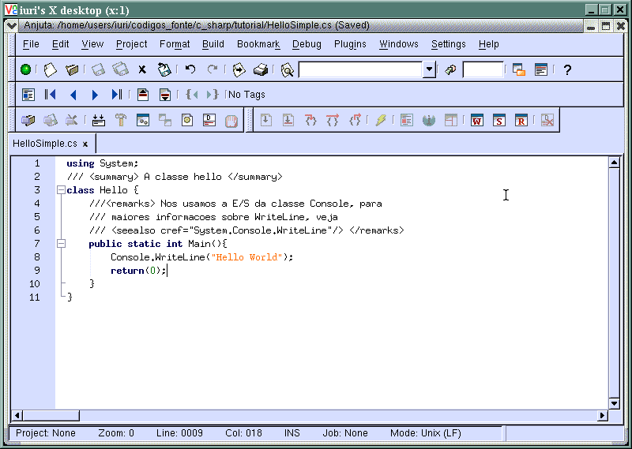
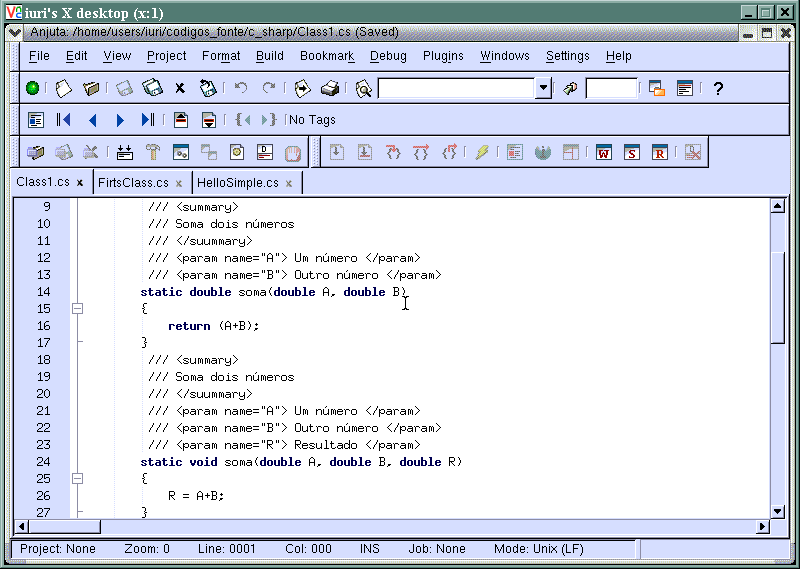

Este módulo descreve algumas tags da documentação de código em C#.
Última revisão: 13/07/2003
Página do projeto: http://tux.lcc.ufrn.br/~iuri/projeto
Você tem o costume de documentar seus códigos? Com certeza não é uma tarefa muito apreciada pelos desenvolvedores, sendo que custa muito dinheiro para criar e principalmente documentar devido ao tempo gasto. Mas, se você for pensar assim, quando precisar realizar uma manutenção em um código, terá de vasculhar todos os vínculos, desvios, enfim, tudo o que implica no respectivo código.
Para isso, a Microsoft criou uma forma de documentação automática, adotando o padrão XML. Assim, qualquer estrutura de código pode seguir as regras que o XML se encarrega de exibir. Estamos falando aqui de uma simples documentação de códigos, não de fluxo de informações de um aplicativo.
Você pode inserir qualquer comentário no código, inserindo as ///(três barras), e com isso o programa XML saberá do que se trata.

Há tags XML que são sugeridas para serem usadas(você também pode criar as suas), veja algumas:
Para uma descrição rápida.
Para uma descrição detalhada, esta tag pode conter parágrafos, listas e outros tipos de tags.
Esta tag permite parágrafos em uma estrutura <remarks>
Para demonstrar um exemplo de um método, propriedade ou como um membro deve ser usado, utilize com a tag <code>.
Para indicar que é o texto seguinte é código de aplicativo.
Para indicar uma referencia a outro membro ou campo, o compilador checa se de fato o "membro" existe.
Para prover uma descrição para um parâmetro de um dado método.

Para documentar um valor de retorno e um tipo de método.
Para descrever uma propriedade.